WBP#1 - All New Weekly Bucket Post

Since I can't bring myself to write full blown blog posts on a regular basis, let's try to do something else. I will attempt to publish a short blogpost every friday about all the small things that I encountered during the last week.
PFX Certificates -
After finally receiving confirmation that our code signing certificate has been validated, I got a link to "download" it. And by download they actually mean, import it in your browsers certificate store. From there you can export it and set a password to encrypt the file if you want (you want!).
So far so good, but our devs said they need a .pfx file, not the .p12 I had given them.
Thanks to AkbarAhmed.com this proved not to be a problem at all.
1.) A .p12 and .pfx are the exact same binary format, although the extension differs.
2.) Based on #1, all you have to do is change the file extension.
DNS updates -
Not really something new I learned, as something I already new but forgot in the meantime, was how to request a new dhcp lease on an ubuntu server.
$ sudo dhclient -v eth0 -r
this kills your connection... do not attempt over SSH ;)
$ sudo dhclient -v eth0
$ id a
Since we're at linux 101 already, let's quickly do the other one as well.
Change hostname - Sure, this one is easy. Nevertheless, I got stuck for longer then I would like to admit. After editing the files /etc/hosts and /etc/hostname, I wanted to apply the settings without rebooting the server. However, that's where I encountered this little problem.
$ sudo /etc/init.d/hostname restart
[sudo] password for user:
sudo: /etc/init.d/hostname: command not found
I could've sworn that this was the correct way to do this. Turns out, it's this now.
$ sudo hostname -F /etc/hostname
One more thing I noticed while setting the new hostname was this little gem, which returns the IP registered to the hostname.
$ hostname -I
10.0.3.162
If I think back how many times I could've used that one in scripts in the past...
LXC Autostart - LXC or LinuX Containers are a great alternative to full virtualization, especiall when you're running things on a vserver like I do. However, when you have to reboot your vserver due to kernel updates, your containers either don't start at all or simultaneous, which makes it hard if you have services like dns/dhcp running in one of them.
The solution is a little tool called lxc-autostart, which let's you decide in which order to start your LXCs. Here are a few config lines, which you can add to your containers config file in /var/lib/lxc/containername/config.
lxc.start.auto = 1 # 0=no, 1=yes
lxc.start.delay = 0 # seconds to wait before starting (group specific)
lxc.start.order = 500 # order, higher is first
lxc.group = dns # group,groups
After you've configured every host you want to autostart, you can start,stop or reboot them like this
sudo lxc-autostart [-r/-s] -g "dns,web,db"
# -r=reboot, -s=shutdown, without is boot
Pay attention to the groups, all containers in group dns are started first. Within that group, you can define the order (e.g 500, 450, 400). If you set a start.delay value for one hosts, all groups and hosts that follow will also wait for that amount of time before starting.
#host 1
lxc.start.delay = 0 # start immediately
lxc.start.order = 500 # first host
lxc.group = dns # first group
#host 2
lxc.start.delay = 20 # on turn, wait 20 seconds, then start
lxc.start.order = 450 # second server
lxc.group = dns # first group
#host 3
lxc.start.delay = 0 # start after host 2 (after 20 seconds + boot)
lxc.start.order = 400 # third server
lxc.group = dns # first group
#host 4
lxc.start.delay = 0 # start immediately after group dns is done
lxc.start.order = 500 # first in group web
lxc.group = web # second group
CSP - I have spent quite a bit of my time with the Content-Security-Policy header. So far I have always found a way to manage without "unsafe-inline" (allowing inline css or js - BAD!) but when I tried to get Disqus working with my CSP I ran into an interesting problem. First of, I only used the unsafe-inline option for testing purposes. This will never get onto my production systems, NEVER!
Here is what I did, in case you want to try it yourself.
index.html
<html>
<head>
<!-- CSP Without "style-src unsafe-inline" reports CSP violations (of course!)
<meta http-equiv="Content-Security-Policy" content="default-src 'self'; script-src 'self' a.disquscdn.com/embed.js hashtagsecurity.disqus.com; img-src 'self' referrer.disqus.com/juggler/stat.gif a.disquscdn.com/next/assets/img/; frame-src 'self' disqus.com/embed/comments/;" />-->
<meta http-equiv="Content-Security-Policy" content="default-src 'self'; script-src 'self' a.disquscdn.com/embed.js hashtagsecurity.disqus.com; img-src 'self' referrer.disqus.com/juggler/stat.gif a.disquscdn.com/next/assets/img/; frame-src 'self' disqus.com/embed/comments/; style-src 'self' unsafe-inline;" />
</head>
<body>
<h1>CSP with DISQUS</h1>
<div id="disqus_thread"></div>
<script type="text/javascript" src="disqus.js"></script>
<noscript>Please enable JavaScript to view the <a href="http://disqus.com/?ref_noscript">comments powered by Disqus.</a></noscript>
<a href="http://disqus.com" class="dsq-brlink">blog comments powered by <span class="logo-disqus">Disqus</span></a>
</body>
</html>
disqus.js
/* * * CONFIGURATION VARIABLES: EDIT BEFORE PASTING INTO YOUR WEBPAGE * * */
var disqus_shortname = 'hashtagsecurity'; // required: replace example with your forum shortname
/* * * DON'T EDIT BELOW THIS LINE * * */
(function() {
var dsq = document.createElement('script'); dsq.type = 'text/javascript'; dsq.async = true;
dsq.src = '//' + disqus_shortname + '.disqus.com/embed.js';
(document.getElementsByTagName('head')[0] || document.getElementsByTagName('body')[0]).appendChild(dsq);
})();
And finally, running a webserver in the directory that holds both those files
python -m SimpleHTTPServer 8080
What I found was, that it doesn't really matter whether I enable "style-src unsafe-inline" or not, since the inline style is in the embed.js file which is pulled from discuscdn.com. It appears that in that case, CSP still sees it as a violation.
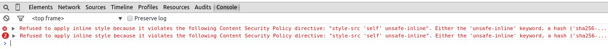
If anyone can explain to me exactly why this is, I'd be very happy to hear about it.
Speaking of CSP, I digged out the PHP Based CSP violation logger I used for debugging in the past. Just make sure to move the reports file to a private directory. Don't want everyone reading your CSP reports.
Local Web Servers - Since I was playing around with CSP rules and violations, I found myself in need of a webserver. Installing apache2 or NGINX just to deliver a handful of pages to myself seemed a bit overkill, so I looked towards minimal webservers.
My favourite, being installed by default on most linux systems, is definitely pythons simple server
python -m SimpleHTTPServer 8080
Serving HTTP on 0.0.0.0 port 8080 ...
I used a PHP based CSP reporting tool to collect more info about found violations, however the integrated http server in python doesn't support PHP. Luckily, php does :)
sudo apt-get install php5-cli
php5 -S 127.0.0.1:8000 -t /path/to/docs/
Keepass Password Generation Profiles - Password rules for password generators can be very helpful. Keepass offers an option to customize the way passwords are generated, which is great as the default policies are really bad!
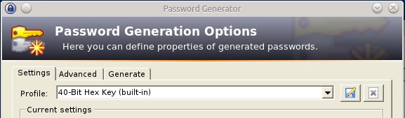
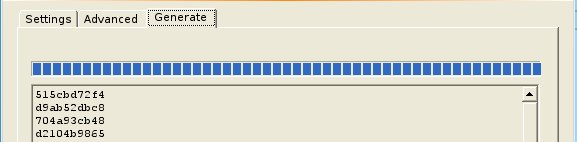
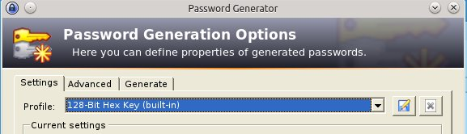
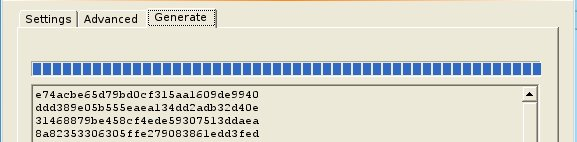
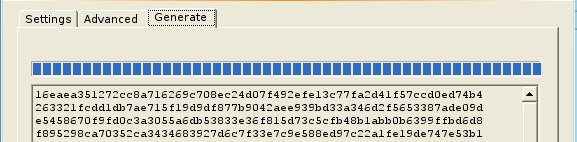
Luckily, dF. over at stackoverflow.com has a nice list of chars for that.
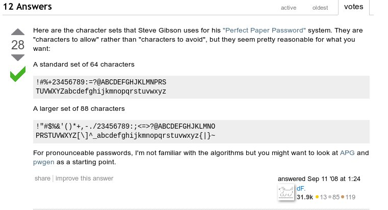
A 12-char password policy in Keepass, this would look like this.
Whitelist chars (not all of them, just an example!)
[\!\#\%\+\2\3\4\5\6\7\8\9\:\=\?\@\A\B\C\D\E\F\G\H\J\K\L\M\N\P\R\S]{12}
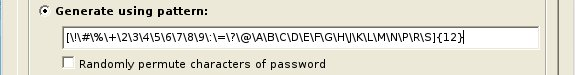
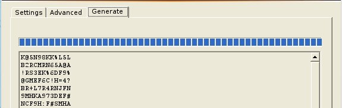
If you prefer a "blacklist chars" approach, you can do it like this:
Bad Chars: il10o8B3Evu![]{}
PW Policy: [dAs^\i^\l^\1^\0^\o^\8^\B^\3^\E^\v^\u^!^\[^\]^\{^\}]{12}
Char Rule: == [d]igits, mixed [A]lpha, [s]pecial, [^] except, [\] escape char
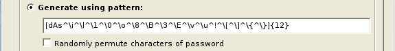
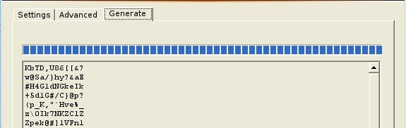
More info on Keepass generation rules can be found here.
Keepass and KeeFox - Not much to say here except that it has gotten real easy lately, to integrate keepass into Firefox. Just follow the steps on stackoverflow.
Web Password Manager - I'm always on the lookout for web based password managers, that can be hosted on-site. Especially if they're open source, or better yet free (as in speech).
I haven't had the time yet to take a closer look, but at first glance RatticDB seems promising, although early stage. I will write more about it once I have spend more time with it - assuming it proves useful.
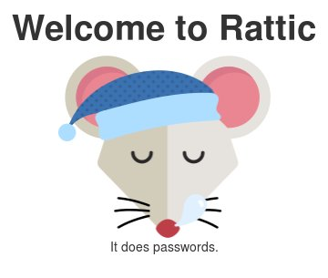
Flask Blueprint Templates - suck! I'm sorry but I can't say it any other way.
I like the idea of how blueprints (sort of plugins in pythons web framework Flask) access templates. If I have an app, with it's index.html lying in app/templates/index.html and a sub app or plugin within said app that has it's own templates folder, like this app/subapp/templates/ everything is great as long as I don't have any name conficts in templates.
Accessing /app/templates/index.html within the subapp
render_template("index.html")
Accessing /app/subapp/templates/subapp.html within the subapp
render_template("subapp.html")
Accessing /app/subapp/templates/index.html within the subapp
- not possible -
To be able to access the subapp index.html file, you would have to either rename the it, or build a structure like this:
/app/subapp/templates/subapp/index
Blueprint("subapp", __name__, template_folder="templates")
render_template("subapp/index.html")
It works, but it's annyoing as hell. I can understand the usecase if you want to frequently access the main apps templates in subapps, but I think there should be an option to limit the subapp to it's own template folder.